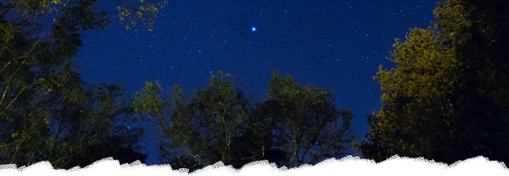

ABOUT US
顏氏牧場誕生於1985年，已經在埔里桃米里山林間隱身將近20個年頭，週邊是環繞生態環境極佳的桃米生態村和適宜單車旅行的山林小徑，多年來常是熟悉山客和鄰人駐足流連的地方。
今年夏天，我們構思以最不衝擊這片山林的方式開始正式對外開放，仍然希望提供最親切的自然和樸素曠野，因此我們以經營露營區和輕食咖啡作為第一步，未來的夢想是一座提供藝術書店的莊園。
不論晴雨，短暫駐足或多日盤桓，顏氏牧場隨時歡迎旅人來此看霧聽雨。